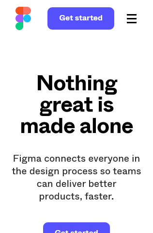
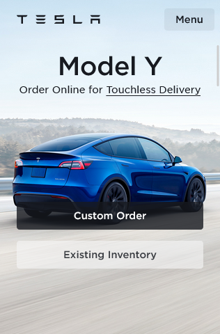
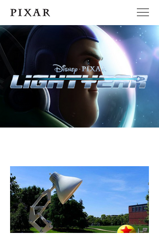

Visual Hierarchy
Figma figma.com The visual hierarchy principle is applied here, by how Figma uses a large heading, followed by smaller ones, and a CTA button.
Contrast
Tesla tesla.com The contrast principle is applied here, by how Tesla uses the blue color in the car to highlight it from the rest of the design. It calls attentiton.
White Space and Clean Design
Pixar pixar.com The white space and clean design principle is applied here, by how Pixar gives space for its design to breath. They follow the minimal design approach.